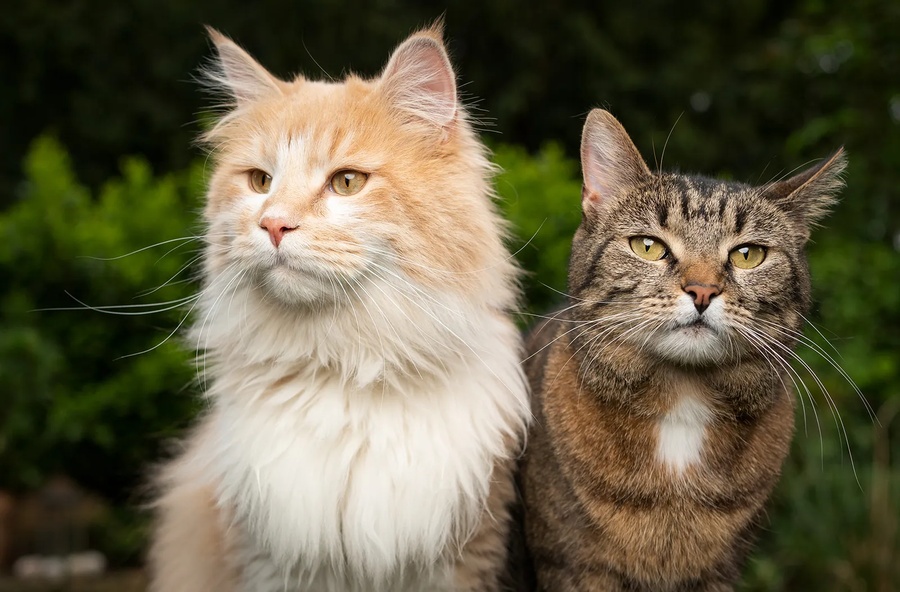

Understanding cat's emotions

Cats communicate their emotions subtly, which is often misinterpreted as aloofness. While dogs wag their tails in excitement, a cat's emotional spectrum requires attention to smaller cues like purring, kneading, and body posture. These signals show that cats experience a wide range of feelings, from joy and affection to fear and sadness.
Purring: Often associated with contentment, purring can also signify self-soothing or seeking comfort.
Kneading: Cats knead as a sign of relaxation and trust, often linked to kittenhood behaviors.
Body Language: Flattened ears, an arched back, or a flicking tail can indicate stress, while slow blinking expresses trust and love.